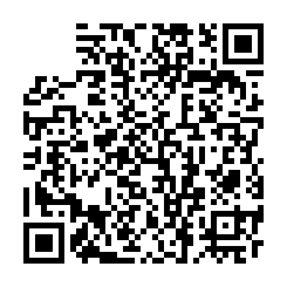
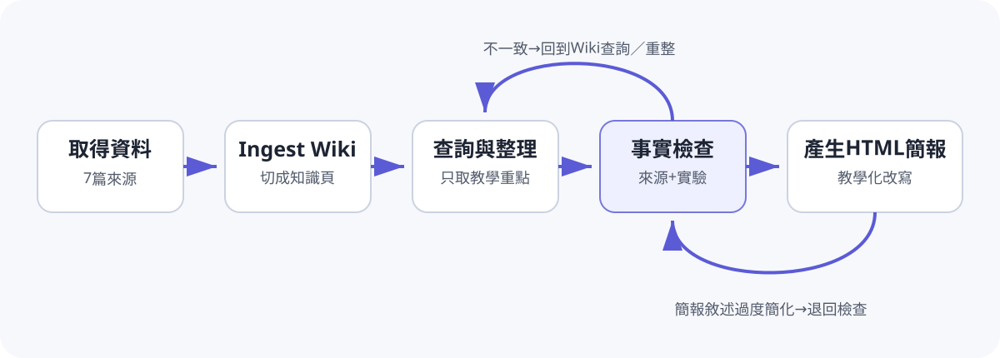

1. 先講結論
QR Code能在部分破損時被讀取，主要不是因為手機「猜得到」，而是QR Code本來就把錯誤更正碼一起寫進圖案中。掃描器在定位成功後，可以利用額外的冗餘資料修正一部分錯誤或遺失的codewords。
先找到QR Code
三個角落的Finder Pattern讓讀取器快速判斷QR Code的位置、方向與旋轉角度。
再修復資料
資料區同時包含資料codewords與Reed-Solomon錯誤更正codewords，因此局部汙損不一定會造成內容遺失。
2. 一張QR Code裡不只有資料
黑白小格叫做module。QR Code Model 2共有40個version，Version 1是21×21 modules，之後每升一個version，每邊增加4個modules，直到Version 40的177×177。

Finder Pattern
三個大方框位在三個角落，是定位與判斷方向的重要結構。DENSO WAVE說明其黑白比例設計為1:1:3:1:1，目的就是降低和一般印刷圖樣混淆的機會。
Quiet Zone
QR Code周圍需要留白，讓讀取器能把符號和背景分離。DENSO WAVE的產生指南指出，標準QR Code周圍需要margin。
Timing / Alignment
Timing Pattern協助建立module網格；較高version還會使用Alignment Pattern來校正失真。
Data + ECC
真正的資料與錯誤更正碼會分布在剩餘區域，之後再套用mask，避免出現太難掃描的圖樣。
3. 為什麼資料壞掉還有機會救回來？
QR Code使用Reed-Solomon Code做錯誤更正。簡單說，就是除了原始資料之外，再加入一批可以用來重建資料的冗餘codewords。
約7%
偏向容量，錯誤更正較少。
約15%
DENSO WAVE表示M是常見選擇。
約25%
適合較容易髒污的環境。
約30%
最高的一般QR Code錯誤更正級別，但資料容量也會下降。
Reed-Solomon特別適合處理集中發生的錯誤，但最後能否掃到，仍會受資料分布、interleaving、破損形狀、是否傷到結構區，以及讀取器實作影響。
4. 掃描器其實經過很多步驟
5. 「缺一角」到底是哪一角？
情況A：資料區被遮到
只要定位仍成功，而且受損codewords沒有超出ECC能力，就可能照樣解碼。這也是貼小Logo在QR中央有時仍可掃描的原因之一。
情況B：Finder Pattern整個被破壞
風險高很多。一般QR Code有三個Finder Pattern，標準偵測會依賴這些結構；某些讀取器也許有額外容錯，但不能把它當成QR Code本身的保證。
情況C：Quiet Zone被背景吃掉
即使資料完全沒壞，過度靠近文字或圖案、裁掉外圍留白，也可能降低辨識成功率。
情況D：整張縮太小或模糊
每個module無法被穩定取樣時，ECC也無法補救所有問題。DENSO WAVE建議依印表機與掃描器能力選擇module尺寸。
6. 實際做一次破損測試
我用同一段文字建立Version 6、41×41 modules的QR Code，分別使用L/M/Q/H四個ECC級別，再把中央區域塗白。最後使用OpenCV QRCodeDetector解碼。這不是標準規範的保證值，只是一個「實際執行紀錄」。
原始H級

✓ OpenCV可解碼
中央約20%塗白

✓ H級仍可解碼
中央約25%塗白

✕ H級此測試已失敗
遮掉左上Finder

✕ H級此測試失敗
同一測試的成功上限（本次OpenCV結果）
| ECC | 中央白色方塊 | 再大一級 | Finder被遮 |
|---|---|---|---|
| L | 5%成功 | 8%失敗 | 失敗 |
| M | 12%成功 | 15%失敗 | 失敗 |
| Q | 18%成功 | 20%失敗 | 失敗 |
| H | 20%成功 | 25%失敗 | 失敗 |
7. LLM Wiki的loop / graph
這份Wiki不是「找到資料就直接叫LLM寫簡報」，而是把資料取得、Wiki整理與事實檢查分開，讓錯誤在進入簡報之前就被抓到。

會重複的地方
「查詢Wiki→整理重點→事實檢查」是一個loop。只要不同來源說法不一致、句子太絕對，或實驗結果與整理內容不符，就回到Wiki重新查。
重新生成的條件
簡報若把「codeword比例」寫成「圖片破損比例」、把「可能掃得到」寫成「一定掃得到」，就退回事實檢查節點，不直接修飾文字。
為什麼這樣設計
LLM最容易在「把技術概念講簡單」時過度簡化，所以檢查應該放在摘要完成後、簡報生成前，而不是等到HTML都做好才發現。
實際修改
第一次整理時，曾把H級約30%理解成可承受約30%面積損壞。查回DENSO來源後發現它是codewords比例，因此新增「術語檢查＋解碼實驗」節點。
8. Ingest的7篇資料
每篇資料先摘要成可查詢的Wiki節點，再由簡報生成階段選用。下面也標出它在簡報中負責回答什麼問題。
用途：確認QR Code國際標準涵蓋編碼、symbol format、error correction與reference decoding algorithm。
來源頁